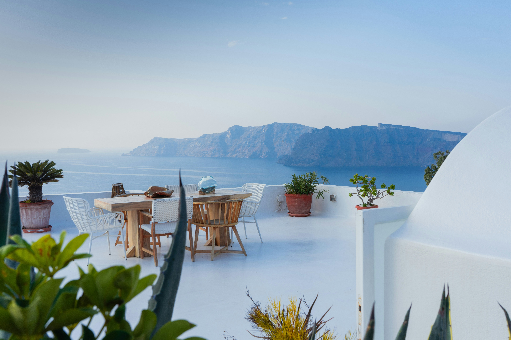
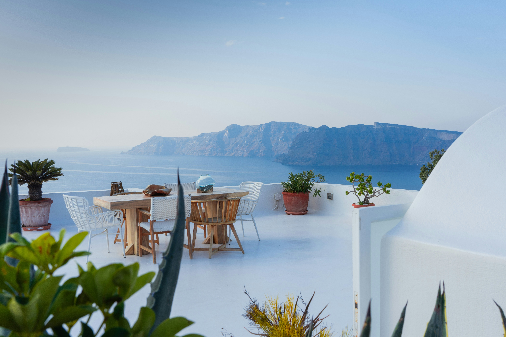
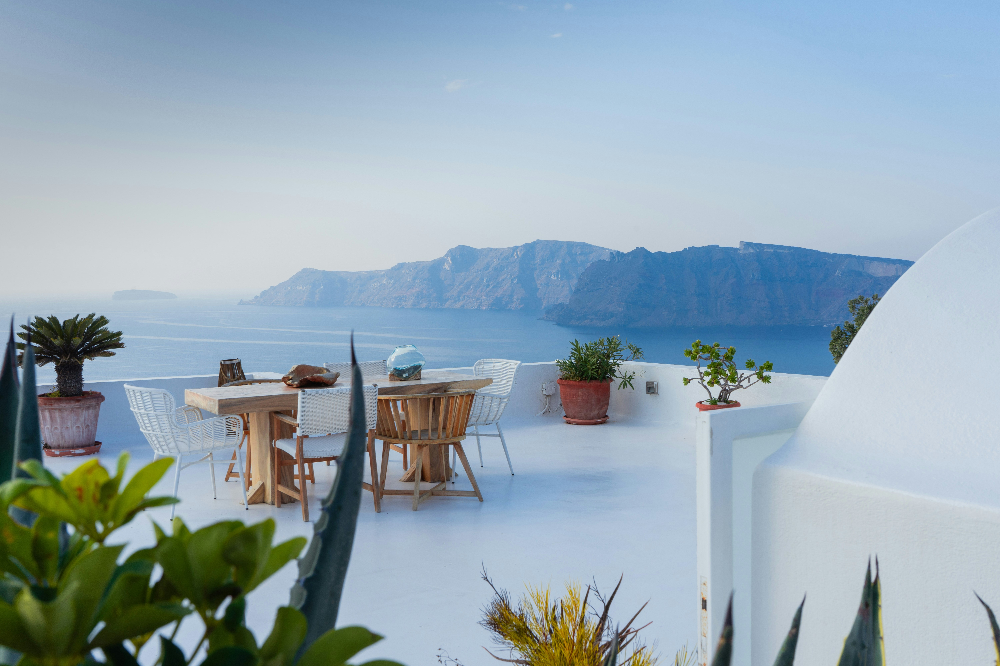

Welcome to our journey through the captivating history of Santorini, a timeless gem nestled in the Aegean Sea. From its ancient settlements dating back to the Bronze Age to the cataclysmic Minoan eruption that shaped its landscape, Santorini's story is steeped in legend and wonder.
Archaeological excavations have unearthed remarkable treasures, shedding light on the island's rich past and its role in ancient civilizations. Over the centuries, Santorini has been influenced by a tapestry of cultures, each leaving its mark on the island's architecture, traditions, and cuisine. Today, visitors are drawn to Santorini's breathtaking volcanic landscape, picturesque villages, and stunning sunsets, making it a beloved destination for travelers seeking both history and beauty.
Santorini, also known as Thera, boasts a rich history dating back thousands of years. The island was home to one of the most advanced civilizations of the Bronze Age, with evidence of settlements dating back to the 4th millennium BCE.
One of the most significant events in Santorini's history is the cataclysmic eruption that occurred around 1600 BCE. This eruption, one of the largest in recorded history, devastated the island and is thought to have contributed to the decline of the Minoan civilization on nearby Crete.
Excavations on Santorini have uncovered remarkable archaeological finds, including well-preserved frescoes, pottery, and artifacts. These discoveries offer insights into the island's ancient culture and trade networks.
In modern times, Santorini has become a popular tourist destination known for its stunning sunsets, picturesque villages, and world-class wineries. The island's beauty and rich history continue to captivate visitors from around the globe.

Name: Mariah Rigby
College: Brigham Young University Idaho, Brigham Young University Provo
Major: Marketing
Skillsets: Figma, SQL, VBA, Excel, Microsoft Word,